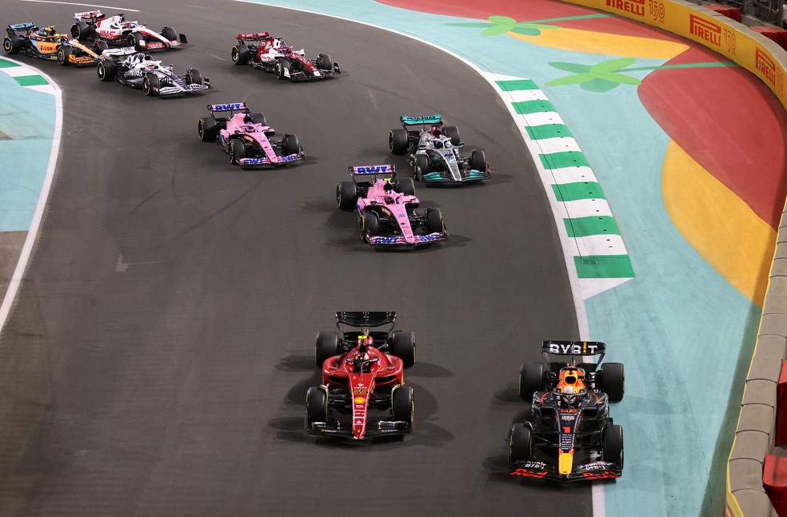

Campeonato nacional
postado 31 de março 2022
Titular incontestável até então, Cuesta perdeu a posição no Gre-Nal 437, quando o Inter venceu por 1 a 0. Na ocasião, Bruno Méndez foi o parceiro de Kaique Rocha. A dupla mostrou bom desempenho e segue junta para a estreia da Copa Sul-Americana diante do 9 de Outubro na quarta. O camisa 15, por sua vez, acabou alijado da delegação que viajou ao Equador por apresentar um quadro de gastroenterite. Sequer voltou aos exercícios com os companheiros na última semana. Como o zagueiro perdeu espaço, a direção colorada observa o mercado para uma negociação
Leia maisMundial de natação
postado 04 de abril 2022
A nadadora amapaense Lucinilda Rosário, 55 anos, está fora do Campeonato Brasileiro Master de Natação que será disputado de 7 a 10 de abril, em João Pessoa. A sétima atleta mais rápida do mundo nos 100 metros medley, Top 7 da Fina, recordista brasileira e sul-americana, não conseguiu apoio para garantir os custos das passagens aéreas para a competição.
Leia maisGrande Prêmio do Brasil
postado 02 de abril 2022 O início do campeonato de 2022 na ‘F1 B’ é das coisas mais interessantes que a temporada apresentou até agora. Sim, é claro que a disputa entre Red Bull e Ferrari já tem ares de ser sensacional. Sim, é verdade que Max Verstappen e Charles Leclerc devem duelar até o fim. E ainda tem a Mercedes, em busca de uma reação que, hoje, parece improvável. Mas há mais o que se observar ali no pelotão também.
Leia mais